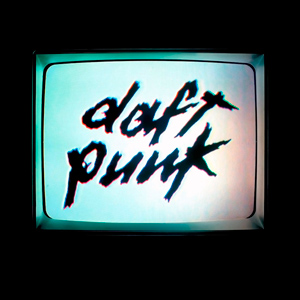

El dúo empezó su carrera músical desde 1993, cuando Thomas Bangalter y Guy-Manuel de Homem-Christo tenían 18 años de más.
La Discografía de Daft Punk

 Ésta página mencionará los principales álbumes publicados por el dúo francés Daft Punk.
Ésta página mencionará los principales álbumes publicados por el dúo francés Daft Punk.
Homework (1997)
Es el álbum de estudio debut del dúo francés de música electrónica Daft Punk, lanzado el 17 de enero de 1997 con Virgin Records. Fue grabado y creado por Thomas Bangalter y Guy-Manuel de Homem-Christo desde 1993 como ya he mencionado, no tenían pensado lanzar el álbum como tal ya que el material ya hecho se iban a publicar como sencillos originalmente, lo pensaron bien ya que todo el material musical realizado por ellos era más que suficiente para recopilarlo en un álbum completo para su publicación. El éxito de Homework atrajo la atención mundial hacia la música house francesa. Para febrero de 2001, el álbum había vendido más de dos millones de copias en todo el mundo y recibió varias certificaciones de oro y platino, el disco constó de 16 canciones originales.
Su música se caracterizaba por extraer pequeños fragmentos de otras canciones ya realizadas (SAMPLES), para remezclarlas, optimizarlas, renovarlas y así crear nuevos sonidos complejos. Tenían un toque de música de Club o de antro al estilo dance french. No todas sus pistas eran creadas por este proceso, algunas si eran grabadas y compuestas originalmente por ellos mismos, casi todas sus canciones no tenían letras, era destacado por sus arreglos y su gran escencia de aquel tiempo. Fue un disco bien recibido, con buenas criticas y aceptación en el nuevo genero House French.
- 1. "Daftendirekt" 2:44
- 2. "WDPK 83.7 FM" 0:28
- 3. "Revolution 909" 5:35
- 4. "Da Funk" 5:28
- 5. "Phoenix" 4:57
- 6. "Fresh" 4:04
- 7. "Around the World" 7:09
- 8. "Rollin' & Scratchin'" 7:28
- 9. "Teachers" 2:53
- 10. "High Fidelity" 6:02
- 11. "Rock 'N Roll" 7:33
- 12. "Oh Yeah" 2:01
- 13. "Burnin'" 6:54
- 14. "Indo Silver Club" 4:34
- 15. "Alive" 5:16
- 16. "Funk Ad" 0:51
- Es de los discos de estudio más largo de Daft Punk con una duración de 1 hora con 14 minutos
- Ejemplo de "SAMPLE" de la canción Fresh
Las canciones del álbum en órden:
 First Album
First Album
El siguiente video nos muestra un ejemplo de sample, en donde extraen pedazos en segundos de canciones ya existentes y le dan su toque final como las conocemos. Le modifican el tono, el audio, la estructura, la base, creando una sinfonía compleja que caracterizó mucho a Daft Punk.
Discovery (2001)
Es el segundo álbum de estudio lanzado el 12 de marzo del 2001 por los sellos Virgin Records y Daft Life. Sigue la misma fórmula de su predecesora, esta vez el disco destacó bastante por su complejidad, desarrollo y peculiaridad muy aclamada, es considerado como uno de los mejores discos que ha lanzado la banda, su buena producción y gran uso de samples lo convierte en un excelente álbum, ahora sus nuevas canciones tenian ya letras, mayor instrumentación, voces, mejores arreglos, fue muy diferente a su predecesor, además conto con la colaboración de Romanthony y Todd Edwards, Thomas y Guy-Manuel interpretaron temas con sus respectivas voces utilizando además un Vocoder para la creación de las voces roboticas y distorcionadas.
El dúo creó para el álbum una película de anime y se proporcionó como banda sonora de la llamada, Interstella 5555: The 5tory of the 5ecret 5tar 5ystem, que fue una colaboración entre Daft Punk, Leiji Matsumoto y Toei Animation. Sin duda, la banda creó un reperterio muy satisfactorio para sus fans. Esta obra se llamó Discovery porque Thomas y Guy habian descubierto nuevos sonidos y retos que pronto se convertirían en música adelantada a su tiempo.
Lista de Canciones:
- 1. "One More Time" 5:21
- 2. "Aerodynamic" 3:28
- 3. "Digital Love" 4:58
- 4. "Harder, Better, Faster, Stronger" 3:44
- 5. "Crescendolls" 3:32
- 6. "Nightvision" 1:44
- 7. "Superheroes" 3:58
- 8. "High Life" 3:22
- 9. "Something About Us" 3:51
- 10. "Voyager" 3:48
- 11. "Veridis Quo" 5:45
- 12. "Short Circuit" 3:27
- 13. "Face to Face" 4:00
- 14. "Too Long" 10:00
- Es ligeramente más corto que el anterior, con apenas 1 hora de duración, su calidad es sublime.
- Esta obra tuvo nominaciones: 2001 Premio Grammy a la mejor interpretación de danza por One More Time (Nominación).
- 2001 Premio Grammy a la mejor interpretación instrumental pop por Short Circuit (Nominación). Second album
Ejemplo de la complejidad y sistema en la creación de la mayoría de canciones pertenencientes al álbum Discovery:

El siguiente video es un clip de la pelicula Interstella 5555 en la escena Nightvision, es totalmente musical, no cuenta con voces ni actuaciones, cada escena esta dividida por el orden de las canciones del propio álbum Discovery.
Alive 1997 (2001)
Es un recopilatorio, un álbum en vivo grabado en 1997 pero lanzado en 2001, se extrajo del Club de Birmingham en 1997 durante el Daftendirektour (nombre de una gira del dúo). carece de pistas individuales; el álbum es una sola pista de 45 minutos de duración. Casetes promocionales británicos y japoneses raros, simplemente conocidos como "Alive", dividieron el álbum en cinco pistas, aunque el álbum todavía estaba en una pista las canciones que la conformaban eran:
- 1.-"WDPK (Part 1)" (samples "Short Circuit" and "Daftendirekt") 1:40
- 2.- "Da Funk" (samples "Daftendirekt" and the "Ten Minutes of Funk" Da Funk remix by Armand van Helden) 16:20
- 3.- "Rollin' & Scratchin'" (samples "Never Seen Before" by EPMD) 11:10
- 4.- "WDPK (Part 2)" (samples an alternative version of "Revolution 909") 10:20
- 5.- "Alive" 6:00
- Guy-Manuel y Thomas Bangalter tocando en vivo
 Alive 1997
Alive 1997


Daft Punk no grabó su primer gran concierto Alive del 97
Desde su lanzamiento no fue muy recordado en su momento siendo muy desapercibido, hasta el lanzamiento del Alive 2007, cuando ya tuvo más consideración
Live in Mayan Theater
El siguiente video mostrado es una grabación en vivo del concierto dado en el Mayan Theater, Los Ángeles, California en diciembre del 97.
Human After All (2005)
Es el tercer álbum de estudio de Daft Punk. Fue lanzado el 8 de marzo de 2005. Y el 15 de marzo de 2005 en Estados Unidos y el resto del mundo a través de Virgin Records. A diferencia de sus predecesoras, el álbum fue grabado entre el 13 de septiembre y el 9 de octubre de 2004 en demasiado poco tiempo respecto a las anteriores, prácticamente en menos de 1 mes. La grabación apresurada fue criticada porque no fue el mismo lapso de grabación que sus álbumes anteriores.
Esta pieza ha sido muy criticada e infravalorada por su ritmo, cambio de dirección, diferente instrumentación, cambios radicales por su estilo musical y sobretodo porque era mucho más corto y con menos canciones a las anteriores, simplemente fueron años de espera para obtener un resultado simple y básico a lo que se esperaba. Este álbum destaca por su estilo de música electrónica, el uso más caracteristico del Vocoder, las voces roboticas que define a Daft Punk, era más repetitivo, no tenía letras laboriosas ni colaboraciónes. Era más flojo y menos trabajado. Despúes del todo tuvo un cierto aprecio, ya que este dúo por cada disco que publica tiene la costumbre de cambiar su sonido de una forma radical y sutil.
Daft punk perdió cierta reputación despúes de la publicación de su tercer álbum y sobretodo por decepcionar a sus fans.
- 1. "Human After All" 5:19
- 2. "The Prime Time of Your Life" 4:23
- 3. "Robot Rock" 4:47
- 4. "Steam Machine" 5:22
- 5. "Make Love" 4:48
- 6. "The Brainwasher" 4:08
- 7. "On/Off" 0:19
- 8. "Television Rules the Nation" 4:47
- 9. "Technologic" 4:44
- 10. "Emotion" 6:57
- Es el álbum de estudio más corto de la banda con una duración de apenas de 45 minutos.
- Thomas y Guy casi no usaron samples para la creación de la obra como en sus notables predecesoras, si no, una técnica de "interpolación", cuando una pieza musical se recrea en una nueva grabación y pretende sonar exactamente igual que la grabación original. Third Album 
Lista de canciones:
La muestra del video nos da un ejemplo de la interpolación usada para algunas de sus canciones de este tercer álbum:
El enfoque de Thomas Bangalter y Guy-Manuel
Es obvio que este álbum no dejó satisfecho a los fans, para un mejor resultado y desempeño laboral en su música, el dúo opto por hacer una pausa. Para así mas tarde dar todo lo mejor de ellos aunque tome mucho tiempo la elaboración de su siguiente y más grande proyecto por realizar. Más tarde harían giras mundiales durante 2006 y 2007, hicieron una colaboración con Disney para la elaboración de la banda sonora de la pelicula Tron: El legado del año 2010, esto seviría como base para una gran inspiración en la manera en la que su siguiente álbum tendría su enfoque y estilo propio.


Alive (2007)
Es un álbum en vivo lanzado por Daft Punk en 2007. La grabación de Alive 2007 se derivó de la presentación en vivo de Daft Punk en su show de Bercy el 14 de junio de 2007 en París, Francia. Las revisiones del set notaron cómo el dúo manipuló y reelaboró su material establecido. Las pistas de sus canciones recopiladas de Homework, Discovery y Human After All fueron totalmente remezcladas por ellos mismos para su presentación en vivo de una manera ingeniosa, su actuación fue muy espectacular para sus fans, contaban con un gran equipo que les pemitían al dúo mezclar, activar bucles, filtrar, distorsionar muestras, ecualizar entrada y salida, transponer o destruir y deconstruir líneas de sintetizador mientras sonaba al mismo tiempo las remezclas tocadas
El álbum ganó el premio Grammy al Mejor Álbum de Electrónica/Dance en 2009.
Alive 2007 fue generalmente recibido con elogios tras su lanzamiento, se convirtió en uno de los eventos más importantes de Daft Punk en su legado musical, elogiado por la gran mejora de las inclusiones de las pistas de su tercer álbum, como si hubieran nacido de nuevo, fue un momento épico para sus fanaticos totalmente energizado por el talento de Thomas y Guy-Manuel.
Ganandose cierto cariño, porque más tarde ya no volvieron a hacer más giras nunca más desde repectivamente 2007 para enfocarse demasiado en la mejora de su siguiente proyecto.
Lista de Canciones:
- 1. "Robot Rock / Oh Yeah" 6:28
- 2. "Touch It / Technologic" 5:30
- 3. "Television Rules the Nation / Crescendolls" 4:51
- 4. "Too Long / Steam Machine" 7:02
- 5. "Around the World / Harder, Better, Faster, Stronger" 5:43
- 6. "Burnin' / Too Long" 7:12
- 7. "Face to Face / Short Circuit" 4:55
- 8. "One More Time / Aerodynamic" 6:11
- 9. "Aerodynamic Beats / Forget About the World" 3:32 3:51
- 10. "The Prime Time of Your Life / The Brainwasher / Rollin' & Scratchin' / Alive" 10:22
- 11. "Da Funk / Daftendirekt" 6:37
- 12. "Superheroes / Human After All / Rock 'N Roll" 5:41
- 13. "Human After All / Together / One More Time / Music Sounds Better With You" 9:58
- Dura 1 hora con 24 minutos, una duración aceptable para una presentación en vivo.


Video en vivo completo de Daft Punk
Fragmento del tour en vivo de Alive 2007:
Random Access Memories (2013)
Es el cuarto y último álbum de estudio del dúo francés de música electrónica Daft Punk. Fue lanzado por el sello Daft Life del dúo, bajo licencia exclusiva de Columbia Records, el 17 de mayo de 2013. El álbum rinde homenaje a la era de la música de finales de la década de 1970 y principios de la de 1980 en los Estados Unidos, en particular los sonidos que surgieron de Los Ángeles. Este tributo se reflejó en el lanzamiento promocional gradual del álbum que incluyó vallas publicitarias, anuncios de televisión y una serie web.
A diferencia de sus álbumes de estudio anteriores, Daft Punk reclutó músicos de sesión para realizar instrumentación en vivo en lugares de grabación profesionales y limitó el uso de instrumentos electrónicos a cajas de ritmos, un sintetizador modular hecho a medida y codificadores de voz antiguos, cambiando en gran medida su música y su esencia. El álbum presenta colaboraciones con:
- Giorgio Moroder
- Panda Bear
- Julian Casablancas
- Todd Edwards
- DJ Falcon
- Chilly Gonzales
- Nile Rodgers
- Pharrell Williams
- Paul Williams.
- Fouth album(último del dúo)
- 1. "Give Life Back to Music" (feat. Nile Rodgers) 4:34
- 2. "The Game of Love" 5:21
- 3. "Giorgio by Moroder" (feat. Giorgio Moroder) 9:04
- 4. "Within" (feat. Gonzales) 3:48
- 5. "Instant Crush" (feat. Julian Casablancas) 5:37
- 6. "Lose Yourself to Dance" (feat. Pharrell Williams and Nile Rodgers) 5:53
- 7. "Touch" (feat. Paul Williams) 8:18
- 8. "Get Lucky" (feat. Pharrell Williams and Nile Rodgers) 6:07
- 9. "Beyond" 4:50
- 10. "Motherboard" 5:41
- 11. "Fragments of Time" (feat Todd Edwards) 4:39
- 12. "Doin' It Right" (feat Panda Bear) 4:11
- 13. "Contact" (feat. DJ Falcon) 6:21
- 14. "Horizon" 4:24 (Pista exclusiva del Bonus Track en Japón)
- Tiene prácticamente la misma duración que su primer álbum Homework, con una duración de 1 hora con 14 minutos.
Random Access Memories es el álbum de mayor éxito crítico de Daft Punk, con una puntuación de 87/100 en Metacritic. En la 56.ª entrega anual de los premios Grammy de 2014, ganó premios Grammy por Álbum del año, Mejor álbum de música dance/electrónica y Mejor álbum diseñado, no clásico, y el sencillo principal "Get Lucky" ganó por Grabación del año y Mejor dúo pop.
Daft Punk junto con Nile Rodgers y Pharell Williams


El álbum fue un éxito comercial y debutó en el número uno en veinte países. Para la grabación se crearon varios efectos de sonido con la ayuda de expertos en cine de Warner Bros, tales como el sonido de fondo de un restaurante, el efecto del goteo de agua, el efecto de lluvia, percusiones, etc. El uso de la electrónica se limitó a cajas de ritmos que aparecen en solo dos pistas del álbum.
La temática del disco fue más clasico, con un toque de pop y blues, además al estilo de música Disco e influencia barroca. La mayoría de las sesiones vocales tuvieron lugar en París, mientras que las secciones rítmicas se grabaron en los Estados Unidos, diversas actuaciones de acompañamiento, como una sección de trompas, instrumentos de viento-madera, una orquesta de cuerda y un coro. Sin duda el dúo ya habia llegado al limite en su carrera musical, dando todo lo mejor de ellos rompiendo todas las barreras, le calló la boca a muchos de quienes creían que su música ya era mediocre y básica, siendo un concepto banstante alejado e inusual para su estilo que siempre los ha caracterizado en toda su carrare de inicio a fin.
El álbum fue un gran éxito, fue aclamado por los críticos y los medios de comunicación, Thomas Bangalter y Guy-Manuel (el dúo) ganaron mucha reputación por haber creado una obra maestra original, este fue su último trabajo, los fans se sintieron más que satisfechos por el resultado.

Lista de canciónes del álbum:
Despúes de la publicación de su último álbum el dúo estuvo inactivo por largo tiempo, no volvieron a sacar más material desde entonces, por otro lado hicieron colaboraciones con The Weeknd en sus temas "Starboy" y "I Feel It Coming"(2016).
Los fans no perdían la esperanza de que algún dia publicaran Alive 2017, siguiendo la tradición, pero nunca llegó.
La esperanza de que un día volvieran a dar más presentaciones y señales de vida, todas estas expectativas se rompieron, hasta que inesperadamente el grupo confirmó su separación en Febrero de 2021 despúes de una trayectoria de más de 25 años. Publicando un último tema en la plataforma de Youtube como despedida.
Todo inicio tiene un final, decir adiós no significa siempre el final, a veces significa un nuevo comienzo. Pasaron de creer en sus ídolos, para luego convertirse en más que ídolos, ahora su legado estará y seguirá hasta el fin de los tiempos. Thomas Bangalter y Guy-Manuel ahora podrán llevar una vida normal.